Amazing Spider-Man Annual (1964 - 2001)
| Comic Book | Release Date | Cover |
|---|---|---|
| Amazing Spider-Man Annual #1 The Sinister Six | 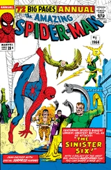 | |
| Amazing Spider-Man Annual #2 The Wondrous World of Dr. Strange | 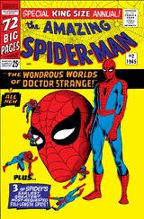 | |
| Amazing Spider-Man Annual #3 ...To Become an Avenger! | 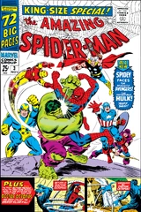 | |
| Amazing Spider-Man Annual #4 The Web and the Flame! | 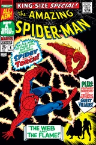 | |
| Amazing Spider-Man Annual #5 The Parents of Peter Parker! | 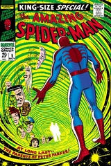 | |
| Amazing Spider-Man Annual #6 | 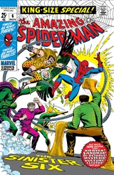 | |
| Amazing Spider-Man Annual #7 | 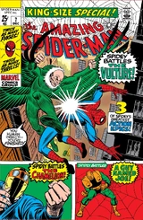 | |
| Amazing Spider-Man Annual #8 | 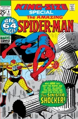 | |
| Amazing Spider-Man Annual #9 The Goblin Lives! | 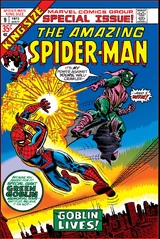 | |
| Amazing Spider-Man Annual #10 'Step Into My Parlor...' Said The Spider To The Fly! | 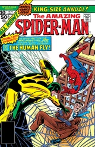 | |
| Amazing Spider-Man Annual #11 Spawn of the Spider | 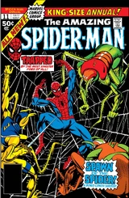 | |
| Amazing Spider-Man Annual #12 | 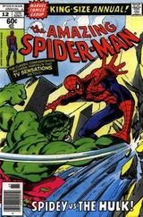 | |
| Amazing Spider-Man Annual #13 The Arms of Doctor Octopus! | 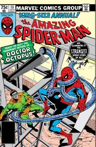 | |
| Amazing Spider-Man Annual #14 The Book of the Vishanti | 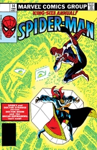 | |
| Amazing Spider-Man Annual #15 Spider-Man: Threat or Menace? | 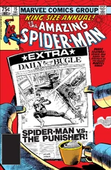 | |
| Amazing Spider-Man Annual #16 Who's That Lady? | 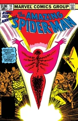 | |
| Amazing Spider-Man Annual #17 Heroes and Villains | 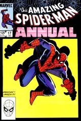 | |
| Amazing Spider-Man Annual #18 The Scorpion Takes a Bride! (But Not the Way You Think!) | 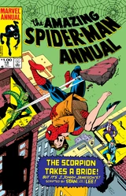 | |
| Amazing Spider-Man Annual #19 Fun 'n' Games | 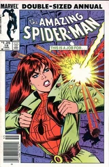 | |
| Amazing Spider-Man Annual #20 Man of the Year | 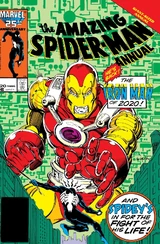 | |
| Amazing Spider-Man Annual #21 The Wedding! | 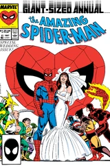 | |
| Amazing Spider-Man Annual #22 Drug War Rages | 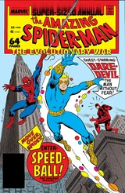 | |
| Amazing Spider-Man Annual #23 Abominations! | 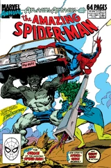 | |
| Amazing Spider-Man Annual #24 Quark Enterprises! or Honey, I Shrunk the Non-Mutant Super Hero! | 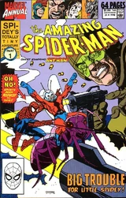 | |
| Amazing Spider-Man Annual #25 The Spider and the Ghost | 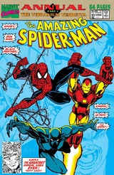 | |
| Amazing Spider-Man Annual #26 The Hero Killers, Part 1: Fortune and Steel | 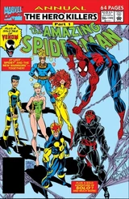 | |
| Amazing Spider-Man Annual #27 Prepare Yourself for...Annex! | 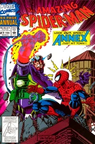 | |
| Amazing Spider-Man Annual #28 The Mortal Past | 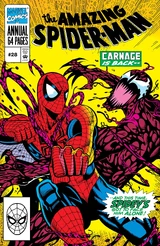 | |
| Amazing Spider-Man Annual #1996 Heart & Soul! | 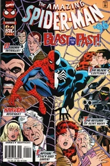 | |
| Amazing Spider-Man Annual #1997 ...Before the Dawn | 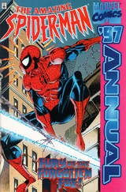 | |
| Amazing Spider-Man Annual #1998 Duel with Devil Dinosaur | 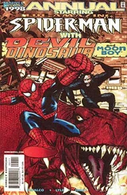 | |
| Amazing Spider-Man Annual #1999 World Enough & Time | 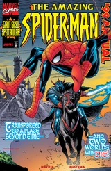 | |
| Amazing Spider-Man Annual #2000 Old Acquaintances | 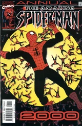 | |
| Amazing Spider-Man Annual #2001 Passages | 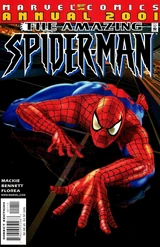 |